Études de cas
Des concepts de marque construits comme des expériences.
Chaque projet articule une intention stratégique, une direction artistique et une traduction concrète : social media, retail, affichage, expérience physique ou contenu culturel.
Projet 01
Typology
Matcha Ritual
Étude de cas : lancement d'une gamme skincare inspirée du matcha, entre minimalisme français, rituel japonais et expérience boutique sensorielle.
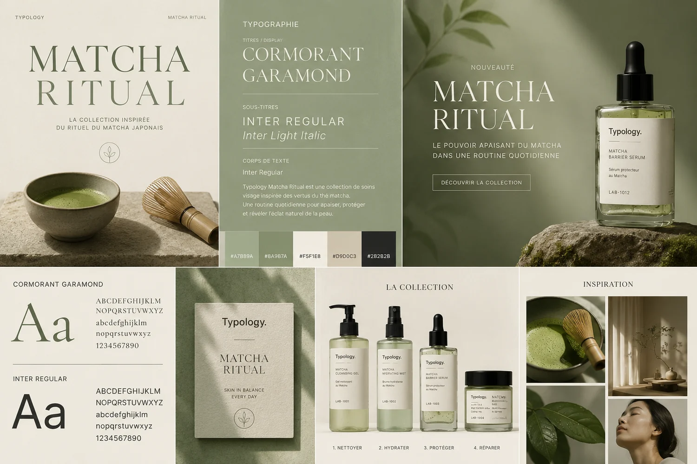
L'univers créé
Matcha Typology puise son inspiration à la croisée du minimalisme français et du rituel japonais. Le concept transforme la routine de soin en un véritable instant de pleine conscience, où le temps s'arrête. L'esthétique est épurée, apaisante, dominée par des teintes organiques qui rappellent la nature et l'authenticité.
La gamme créée
La ligne de soins s'articule autour de formules conçues pour protéger, apaiser et raviver l'éclat de la peau. Elle comprend le masque matcha recouvert, la crème protectrice matcha Barrier, le sérum antioxydant matcha Defense, et la brume hydratante matcha mist. Chaque produit a été pensé comme une étape essentielle d'un rituel sensoriel quotidien, combinant les vertus antioxydantes du matcha à des textures délicates. L'approche est transparente, allant à l'essentiel du bien-être.
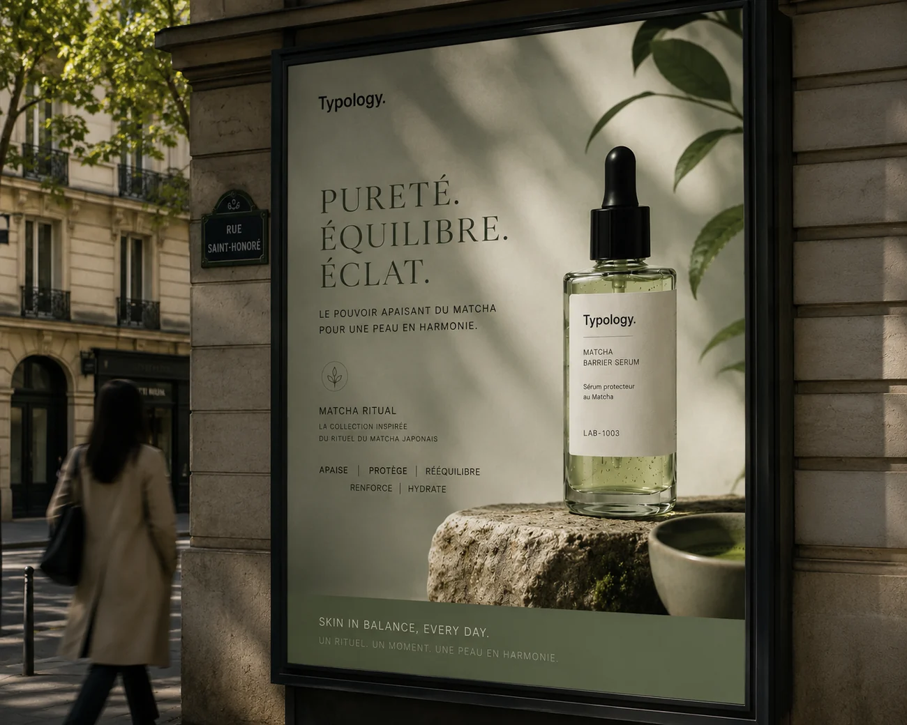
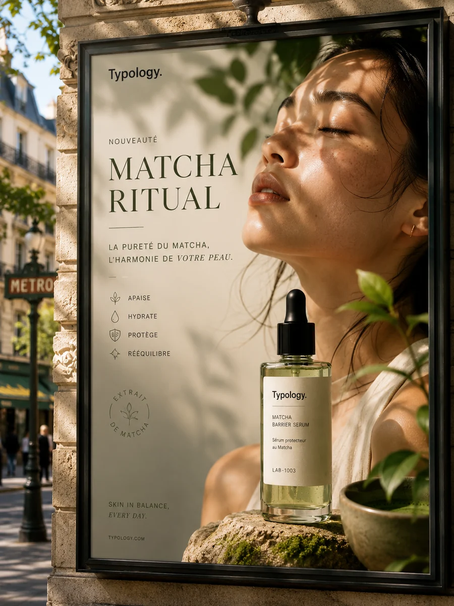
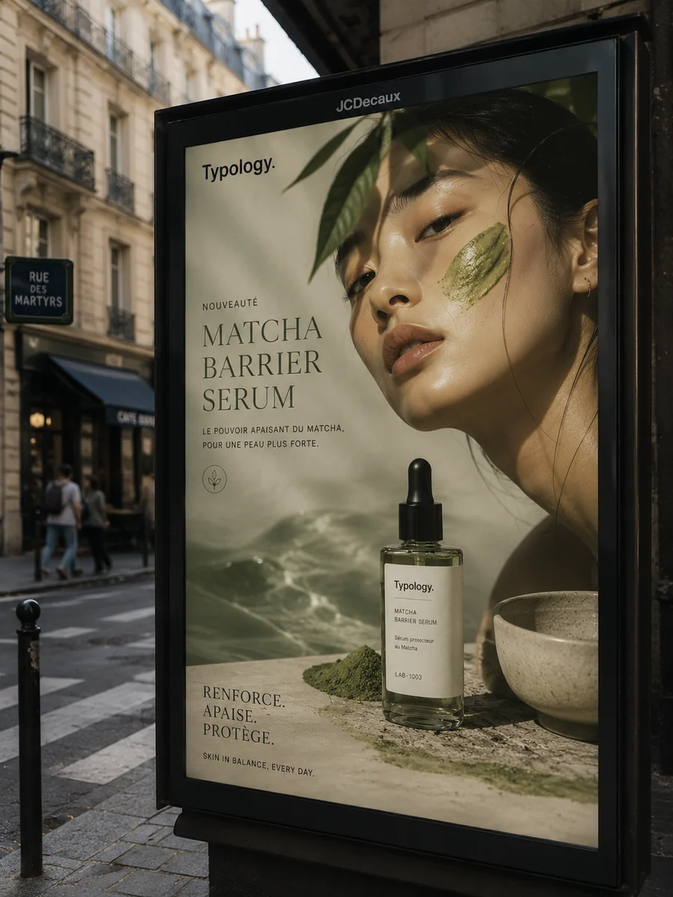
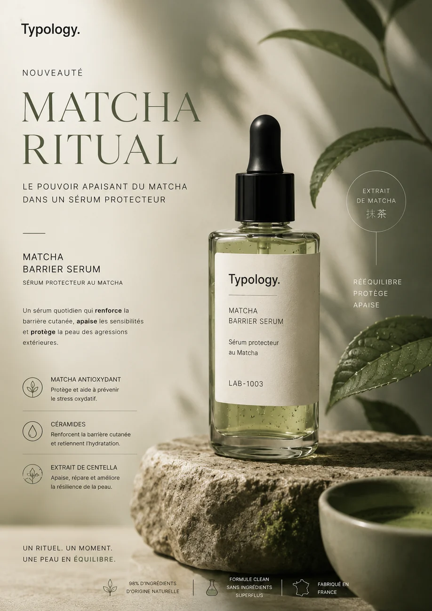
Le branding
L'identité visuelle s'inscrit dans l'ADN de la marque avec des codes typographiques stricts, des packagings sobres et une palette chromatique équilibrée. Le branding incarne la simplicité et l'exigence d'un design pensé pour mettre en avant le produit et son efficacité.
La communication / Lancement retail
Une stratégie de lancement déployée à 360° : campagne d'affichage OOH premium, et une expérience boutique et retail pensée dans les moindres détails. L'activation inclut un diagnostic de peau personnalisé accompagné d'une découverte olfactive et sensorielle de la gamme, avec la distribution d'échantillons dans des sachets inspirés des emballages de thé préliminaires. En boutique, des goodies prolongent l'univers de marque : échantillons en forme de sachet de thé, mugs en céramiques minimalistes, cuillères à matcha gravées Typology et tote bag en édition limitée. La communication construit une histoire cohérente qui suscite l'engagement et le désir de la communauté.
Projet 02
Chloé
Love Letters
Étude de cas : lancement d'un parfum et d'une expérience immersive autour des lettres que l'on garde, de la mémoire intime et de la douceur parisienne.

L'univers créé
Love Letters est une plongée dans l'intimité, la nostalgie et la douceur parisienne. L'univers s'articule autour des mots que l'on garde et des souvenirs qui nous lient, invitant chacun à renouer avec l'art de la correspondance amoureuse dans une atmosphère délicate et poétique.
Le design du produit
Le parfum transcende sa fonction première pour devenir un véritable objet de mémoire. Son flacon, élégant et intemporel, se pare de détails subtils évoquant les cachets de cire et le papier à lettres. Une esthétique luxueuse qui donne une dimension précieuse au geste de se parfumer.
La Letter Room
Une pièce immersive conçue comme le cœur émotionnel du projet. Suspendues dans l'espace, des lettres volantes créent une atmosphère onirique. Les visiteurs sont invités à s'y asseoir pour écrire à une personne aimée ou à eux-mêmes, bercés par la musique et le sillage mémorable du parfum.
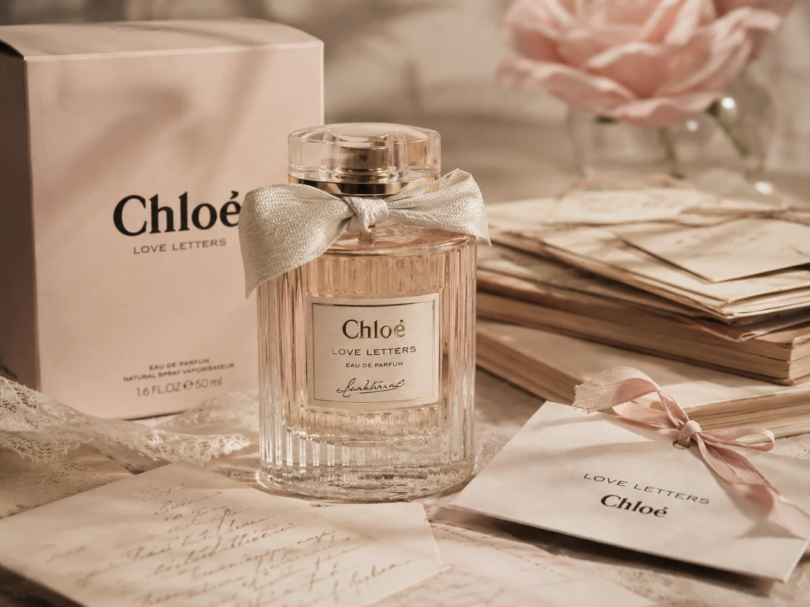
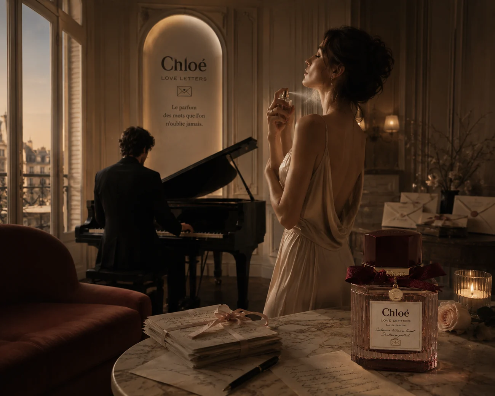
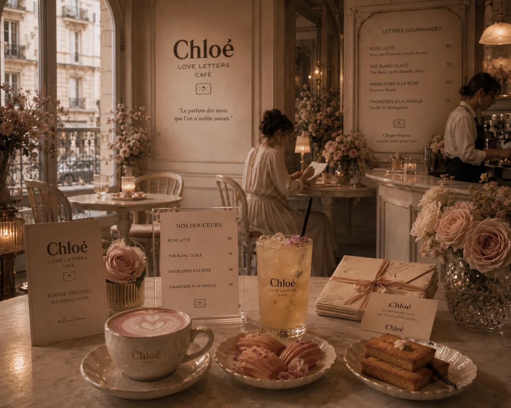
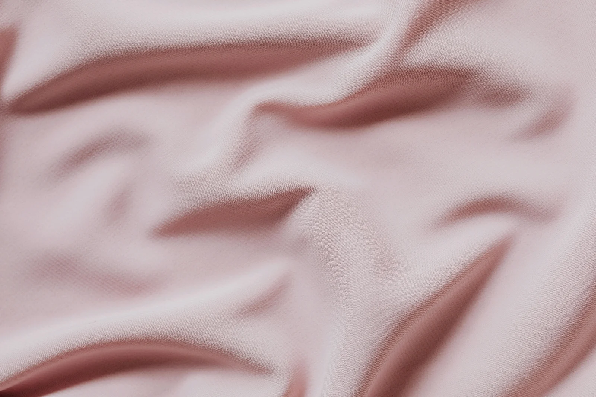
Le café & descriptif du menu
L'expérience se prolonge dans un café éphémère aux teintes douces et chaleureuses. Le menu, pensé comme une déclaration, propose des créations spécifiques : Le rose latte, la raspberry rose tart, et le vanilla love cake. Chaque commande est servie avec une carte Chloé permettant d'écrire un mot, un souvenir ou une lettre à l'attention d'une personne chère.
La campagne pub
Un film publicitaire envoûtant capture l'essence du parfum et l'émotion de l'écriture. J'ai choisi de rythmer cette campagne sur la musique Beauty de Sofiane Pamart, offrant une dimension poétique et mélancolique à la direction artistique (mêlant soie froissée et enveloppes empilées). Pour prolonger cette immersion, la Letter Room est bercée par la même musique au piano en fond sonore. C'est une célébration du luxe narratif, diffusée sur tous les points de contact pour offrir une expérience holistique et mémorable.
Projet 03
La Minute
Droit
Création de contenu juridique pour rendre le droit accessible aux étudiants et aux professionnels — communauté de plus de 1 000 abonnés sur Instagram.
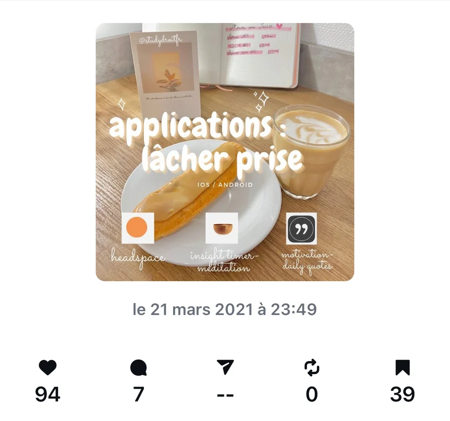
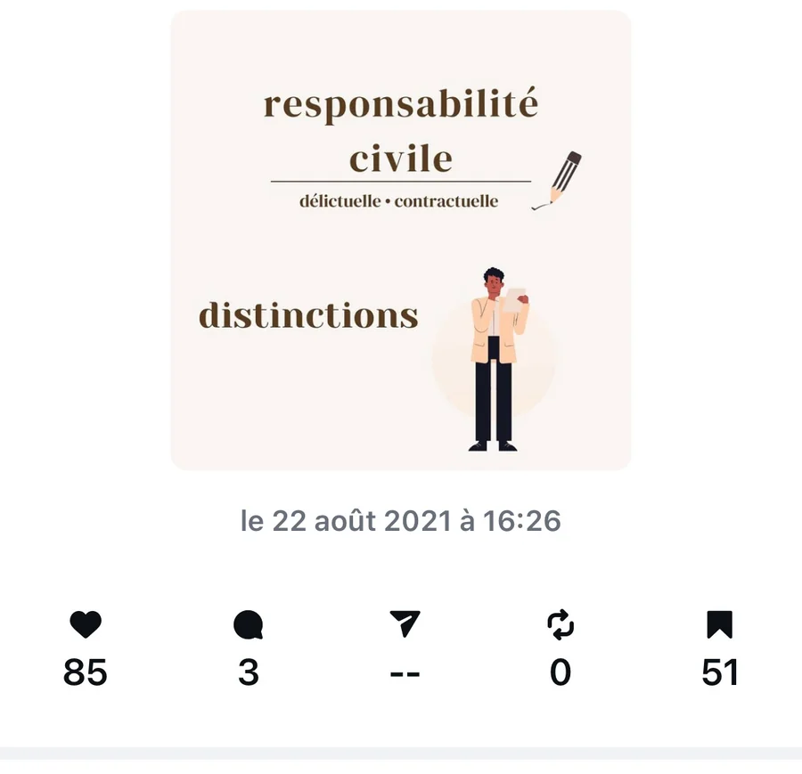
Ce que le projet prouve
Capacité à transformer une matière complexe en contenu clair, régulier et engageant : recherche, synthèse, rédaction, direction visuelle et gestion de communauté.
Projet 04
Sirine
Siena
Peinture, exposition, valorisation d'œuvres et création de contenu artistique. Exposante à la Galerie Image In'Air, Paris — 2023–2024.
Voir la galerie
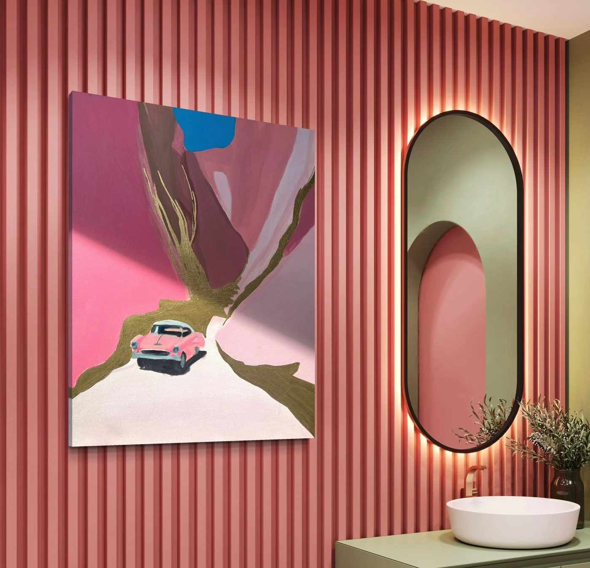


Ce que cette pratique apporte
Un œil. Une attention aux couleurs, aux textures, au silence autour d'une image. Pour une maison de luxe, une galerie ou une maison de vente, c'est une compétence concrète : je comprends ce que regarder veut dire.